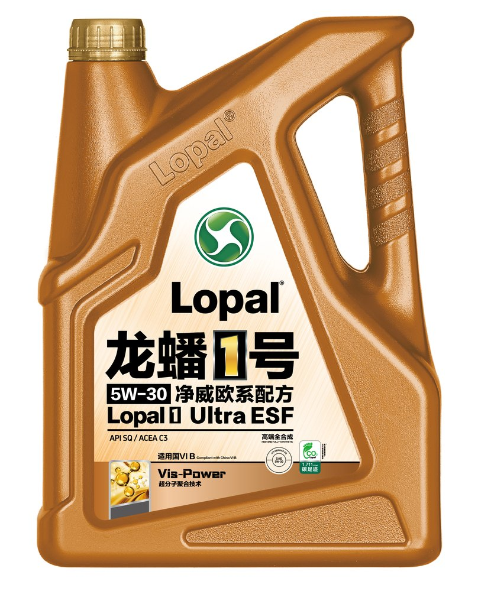

API SP
Актуальный класс API: защита от LSPI и износа в современных моторах.
Полностью синтетическое масло европейского типа (净威欧系配方) — классы API SP и ACEA C3.

Фото — официальные материалы lopal.cn (страница продукта). Перед публикацией сверить упаковку и допуски с действующими TDS.
Моторные масла · Линейка Lopal 1 (龙蟠1号)
Полностью синтетическое моторное масло линейки Lopal 1 европейского типа (净威欧系配方). Класс ACEA C3 — среднезольная формула для современных бензиновых двигателей, в том числе с непосредственным впрыском и турбонаддувом: сохраняет чистоту деталей и совместимо с системами нейтрализации.
Актуальный класс API: защита от LSPI и износа в современных моторах.
Среднезольная формула: совместимость с турбонаддувом и нейтрализаторами.
Универсальная вязкость для широкого парка легковых автомобилей.
Стабильность характеристик в течение всего интервала замены.
| Наименование | Lopal 1 Ultra ESF (龙蟠1号 净威欧系配方) |
|---|---|
| Тип масла | Полностью синтетическое моторное масло |
| Класс вязкости SAE | 5W-30 |
| Класс по API | SP |
| Класс по ACEA | C3 |
| Назначение | Бензиновые двигатели, в том числе с непосредственным впрыском и турбонаддувом |
| Фасовка | уточняется по TDS |
Характеристики приведены по этикеткам официального продукта на lopal.cn. Перед публикацией значения сверяются с официальными TDS и подтверждаются заказчиком.
PDF · будет добавлен после переноса с lopal.cn
PDF · будет добавлен после переноса с lopal.cn
Список официальных дистрибьюторов и точек продаж Lopal в Казахстане размещается в разделе «Партнёрам». Для B2B-запросов воспользуйтесь формой обращения.